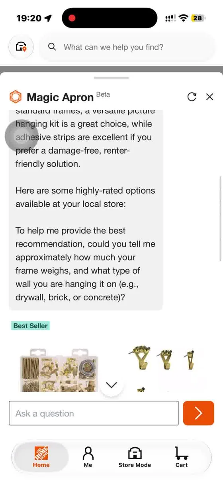
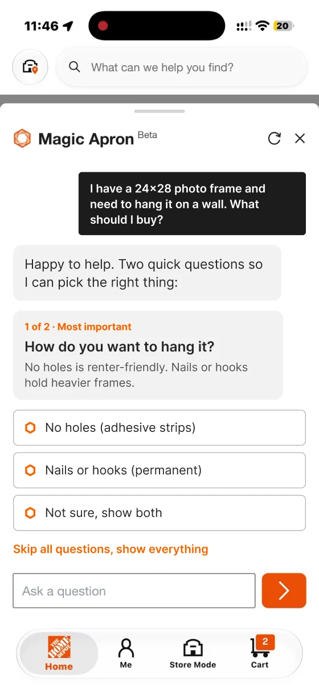
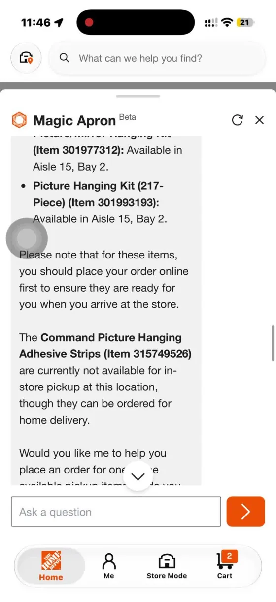
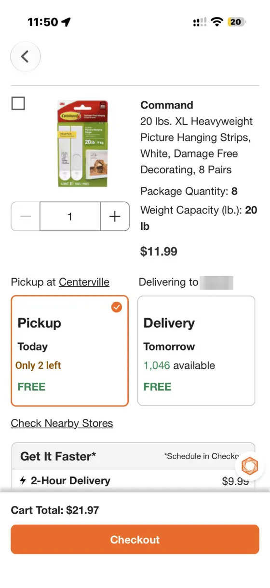

ConceptRetail app, AI assistant · 5 min read
Ask the right question, finish the task
I watched a first-time DIYer ask The Home Depot's AI assistant, Magic Apron, how to hang a photo frame. In Store Mode it showed only hanging kits, so they had to ask again for adhesive strips. And when the item was not on the shelf, reporting it ended with "Thanks for letting us know" and no next step. My redesign asks the 2 questions that matter as taps, and turns an empty shelf into a way to finish the task.
ConceptImpact is a hypothesis to test, not a result.
A concept I made while applying for a UX Designer role at The Home Depot. Not affiliated with or endorsed by The Home Depot. The before screens come from my own recordings of the public app.
Pain point 1: the user had to ask again
I interviewed a first-time DIYer while they used the app, and recorded the screen. They asked the same question on the Home tab and in Store Mode: "I have a 24×28 photo frame and need to hang it on a wall. What products should I buy?"
- On the Home tab, Magic Apron offered two directions: a hanging kit, or adhesive strips for no holes.
- In Store Mode, the same question returned only hanging kits and hooks.
- The participant had to type "Adhesive" before any strips appeared.
Why it matters: the user's goal did not change between modes. Only the tab did. Asking twice adds effort and makes the AI feel unreliable.

The questions were there, but read like information
Magic Apron did ask about frame weight and wall type, but at the end of a long paragraph, after products were already showing. The participant read past it and never answered. People don't type answers to questions buried in text.
Insight: split the questions by importance, and turn the 1 or 2 that change the answer into options people can tap.


Pain point 2: reporting an empty shelf doesn't finish the task
The map showed the strips at Aisle 15, Bay 10. When they were not there, the three-dot menu offered Wrong Location, Out of Stock and Inaccurate Inventory. Tapping one showed "Thanks for letting us know!" and the user was back in the chat. No similar item, no other store, no delivery.
Why it matters: the app got a useful signal for the store, but the shopper still has no product.


Two problem statements
Problem 1. First-time DIYers have to ask Magic Apron again to find the right product, because its questions are buried in text and Store Mode narrows results without asking.
How might we let the AI ask the 1 or 2 questions that matter, as quick taps, before it picks products?
Problem 2. When an item is not on the shelf, shoppers can report it but can't finish their task, because the app ends at "Thanks for letting us know."
How might we turn a report into another way to get the item today?
Task analysis · before
- Ask Magic Apron
- Read a long answer, questions buried
- Extra loop.Ask again: "Adhesive"
- Go to Aisle 15, Bay 10
- Shelf empty, report it
- Dead end."Thanks for letting us know." Task not complete.
Task analysis · after
- Ask Magic Apron
- Tap 1 or 2 answers, or skip them all
- Right products, aisle shown
- Low stock? Reserve it
- Shelf empty? "Can't find it?"
- Done.Similar item, nearby store or delivery.
Ideas I weighed, and what I picked
I judged each idea on effort for the user, effort to build, and how much it changes the existing app.
- For problem 1, I considered showing every product type every time, keeping the questions in the paragraph, and a filter panel. I picked tap-to-answer options for the 1 or 2 most important questions, with "Skip all questions" so the user stays in charge.
- For problem 2, I considered a thank-you toast, sending the shopper to an associate, and "Notify me when it's back." I picked "Still need it today?" with a similar item, a nearby store or delivery, and kept "Notify me" as a backup.
- And when stock is low, I added "Reserve it," so the shopper doesn't drive to an empty shelf.
In the store: 2 questions
- How do you want to hang it? This is the most important one.
- About how heavy is the frame?
- Skip all questions, show everything.
At home: 2 questions
- The same first question, so both modes match.
- When do you need it? This sets pickup or shipping first.
- Skip all questions, show everything.
Wireframes first, then the real screens
I sketched the whole journey in grayscale: ask first, results grouped by when you get them, low stock, the cart, and recovering from an empty shelf. The full wireframes changed too much of the app, so I kept the ideas and moved them onto the real screens.

Eight small changes, and the principle behind each
Each pair shows the real app today next to my redesign of the same screen. Everything else stays as The Home Depot built it.
Before: The app today After: My redesign Change 1 · StoreAsk the most important question first
Instead of guessing "hanging kit," Magic Apron asks how you want to hang it before it shows any product. In my interview, this one question would have caught "adhesive."
UX principles
- Error prevention. It catches the wrong product before it is shown, not after.
- Recognition over recall. Three options to tap, instead of typing "Adhesive."
Before: The app today After: My redesign  Change 2 · Store
Change 2 · StoreQuestions as taps, with "Skip all questions"
Questions move out of the paragraph into their own card, ranked by importance: 1 of 2, then 2 of 2. Every question has "Skip all questions, show everything," so the shopper decides.
UX principles
- Visibility. A question that looks like a question gets answered.
- User control and freedom. Skip all questions at any point.
- Hick's law. Three or four short options, not open text.
Before: The app today After: My redesign  Change 3 · Store
Change 3 · StoreThe right items, with the aisle
The answer uses the shopper's own words: no holes, 10 to 20 lb. Large strips come first, both in Aisle 15 Bay 10. Nails and hooks are one tap away, not the default.
UX principles
- Match the real world. Results repeat what the user chose.
- Flexibility. The other option is one tap away.
Before: The app today 
After: My redesign  Change 4 · Store
Change 4 · StoreLow stock? Reserve it
When fewer than 5 are left, the card says "Only 2 left" and offers "Reserve it." The store holds one pack at Customer Service until 8 PM, so it is still there when the shopper arrives.
UX principles
- Visibility of system status. Low stock is said in words, when it matters.
- Error prevention. It stops a wasted trip for the last pack.
Before: The app today After: My redesign 
Change 5 · HomeSame first question at home
From the Home tab, Magic Apron asks the same first question as Store Mode, so both modes show the same items. At home, the second question is "When do you need it?"
UX principles
- Consistency and standards. Same question, same answer, in both modes.
Before: The app today 
After: My redesign 
Change 6 · HomePickup and shipping, in the order you need
"I need it today" puts pickup at Centerville first, with shipping below. In an earlier session, Home even said the strips were not available for pickup at a store that had them.
UX principles
- Visibility of system status. Each group says where the item is and when you get it.
Before: The app today After: My redesign  Change 7 · Store
Change 7 · StoreA visible "Can't find it?" button
A labeled button on the product card replaces the small three-dot menu.
UX principles
- Fitts's law. A labeled button beats a small three-dot target.
Before: The app today After: My redesign  Change 8 · Store
Change 8 · StoreReport, then finish the task
The shopper still gets a thank-you, plus "Still need it today?" with a similar item in the same aisle, the same item at a nearby store, or delivery. There is an Undo, and "Notify me when it's back."
UX principles
- Help users recover from errors. The task ends with the product, not a dead end.
- User control and freedom. Undo, if it was reported by mistake.
How I'd measure it
These are hypotheses, not results. I'd test them on Magic Apron sessions and watch:
- How often people have to ask again in the same chat
- How often people answer the questions or skip them
- Add-to-cart rate, and reserves on low-stock items
- "Can't find it" reports that still end in a purchase
A trade-off I named: every question costs a tap. That's why there are only two, the most important one comes first, and "Skip all questions" is always there.
Why the business cares
- Trust.Fewer re-asks means more trust in the AI, so people use it more.
- Saved sales.An empty shelf that offers another option is a saved sale, not a lost one.
- Better inventory.The report still reaches the store.
- Cheap to test.Small patches on existing screens are cheap to build and easy to test.
Limits
One interview plus my own walkthroughs is a signal, not proof. Stock counts and the nearby store in the redesign are illustrative.
Next
Test with 5 first-time DIYers, at home and in the store, measure how often people skip the questions, and do an accessibility pass.
Did you like this case study?
Tell me what worked, or what you'd change. It comes straight to me.